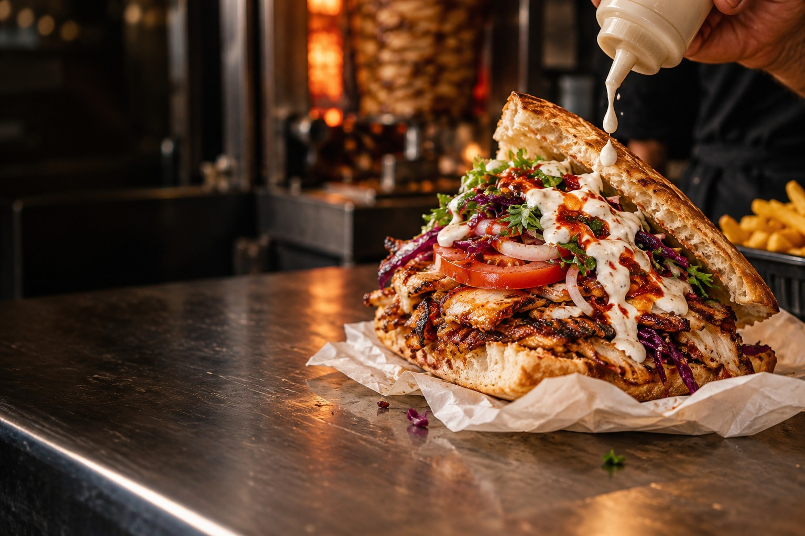
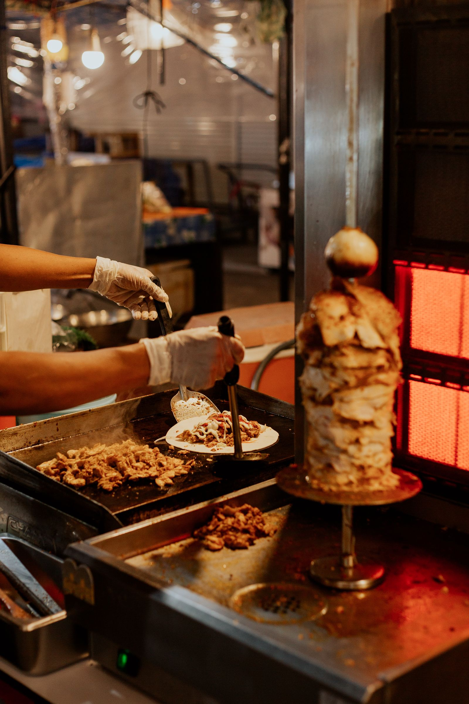
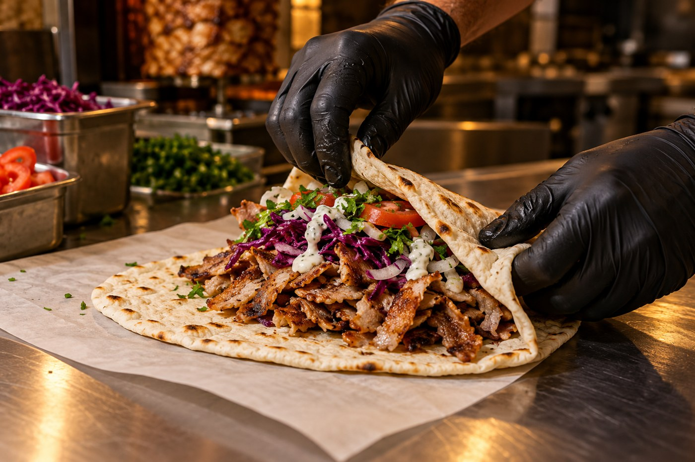
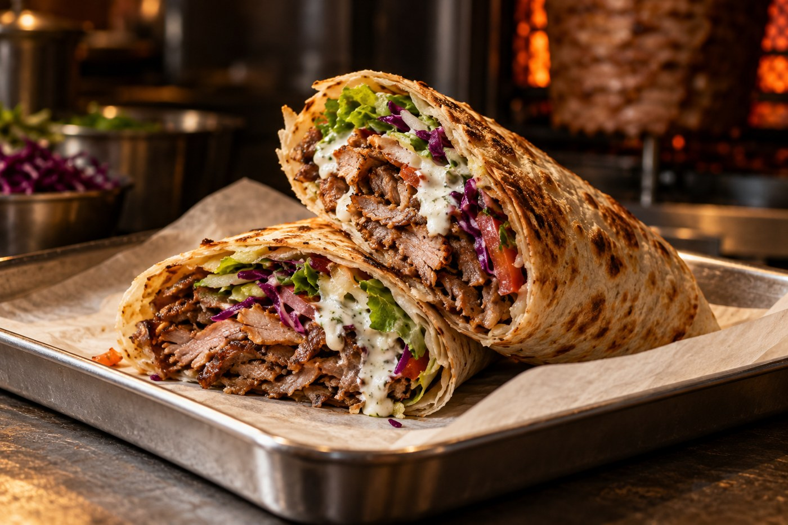

TURKISH
KEBAB



PASSA A TROVARCI
TURKISH KEBAB
- DOVE
- Piazza Municipio
Cles (TN) - ORARI
- Tutti i giorni
11:00–14:30 · 17:30–23:00 - CONTATTI
- +39 000 000 0000
Bozza: menu, prezzi, orari, telefono e immagini sono dimostrativi.